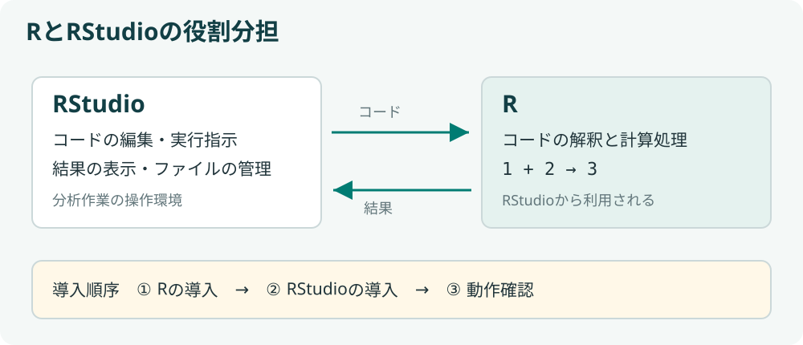
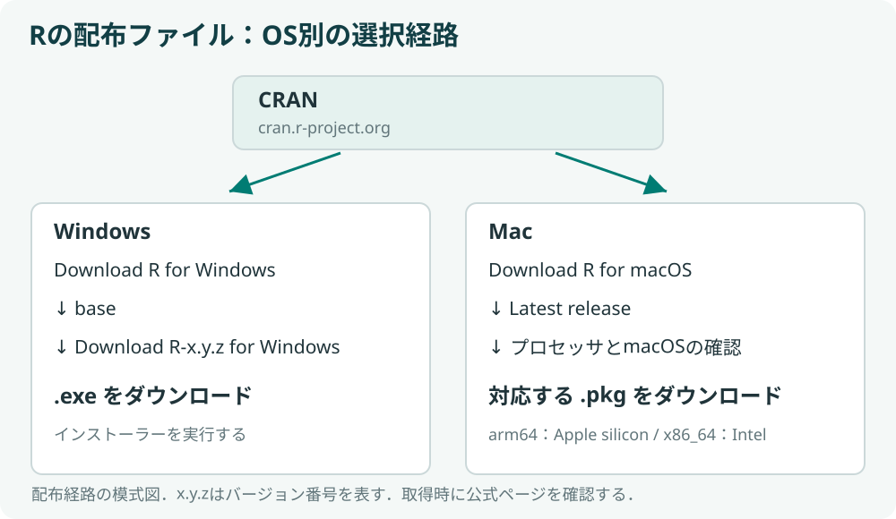
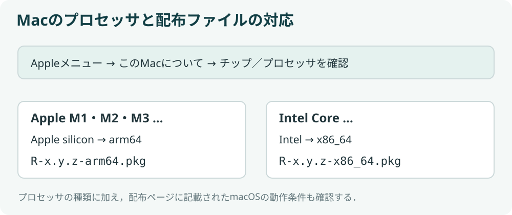
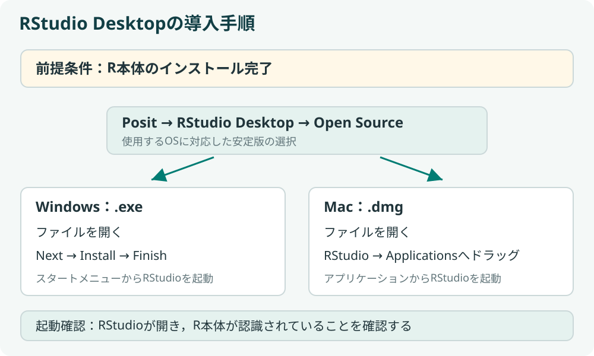

第1回：Rの基本操作 I ― RとRStudioの導入・インストール
到達目標
- RとRStudioの役割の違いを説明できる
- 使用するパソコンに対応したインストーラーを選択できる
- R、RStudioの順にインストールできる
- RStudioを起動し、R本体が認識されていることを確認できる
Chapter 1｜RとRStudioとは
Rとは何か
Rは、データの整理、計算、グラフの作成に用いるプログラミング言語であり、それらを実行する環境でもある。特に統計分析に広く用いられる。
Rでは、処理の指示をコードとして記述する。コードを残すことで、同じ分析手順を繰り返し利用できる。具体的な記述方法と実行操作は第2回で扱う。
Rで行う主な作業には、次のようなものがある。
| 作業 | 例 |
|---|---|
| 計算 | テストの平均点を求める |
| データの整理 | アンケート回答から必要な行や列を取り出す |
| 作図 | 気温の変化を折れ線グラフにする |
| 分析の反復 | 新しいデータに同じ集計手順を適用する |
Rは無料で利用でき、Windows、macOS、Linuxで動作する。R Project：What is R?
補足：パッケージによる機能の追加
Rはパッケージを追加することで機能を拡張できる。パッケージの具体的な使用方法は第4回で扱う。
RStudioとは何か
RStudioは、コードの編集、Rによる実行、結果の確認、ファイルの管理を一つの画面で行うためのアプリケーションである。このように、作業に必要な機能をまとめた環境を統合開発環境（IDE）という。
RStudioには複数の提供形態がある。ここで使用するのは、各自のパソコンにインストールする無料のRStudio Desktop（Open Source）である。開発元はPositであり、ダウンロード先にも「Posit」と表示される。Posit：RStudio IDE User Guide

RStudioでRのコードを実行するには、R本体を別途インストールする必要がある。導入後は通常、RStudioを起動すればRを利用できるため、毎回両方のアプリケーションを個別に起動する必要はない。
- Rはデータ処理や計算を実行する言語・環境である。
- RStudioは、Rを用いた作業を支援するアプリケーションである。
- Rのインストール、RStudioのインストール、RStudioでの動作確認の順に進める。
Chapter 2｜Rのダウンロードとインストール
1. パソコンの種類を確認する
はじめに、使用するパソコンがWindowsかMacかを確認する。Macの場合は、搭載されているチップの種類も確認する必要がある。
| 確認するもの | 確認する場所 |
|---|---|
| Windowsのバージョン・システムの種類 | スタート → 設定 → システム → バージョン情報 |
| macOSのバージョン・チップ | 画面左上のAppleメニュー → このMacについて |
Macで「チップ：Apple M1、M2、M3…」などと表示される場合はApple silicon、「プロセッサ：Intel…」と表示される場合はIntelである。この区別は、Rのインストーラーを選択する際に必要となる。
使用するOSのバージョンを確認し、Macの場合はチップの種類も記録する。これらの情報を、次のダウンロードで使用する。
2. Rの配布サイトを開く
RはCRAN（Comprehensive R Archive Network）から入手できる。ブラウザでRの公式配布サイト：CRANを開く。

3. 使用するOSに沿ってインストールする
以下でWindowsまたはMacを選択し、該当する手順を実行する。インストール後は、タブの下にある「インストールの完了を確認する」へ進む。
- ダウンロード後、ブラウザのダウンロード一覧または「ダウンロード」フォルダから
.exeファイルを開く。 - インストール画面の言語を選択し、説明を確認して次へ（Next）で進む。保存先や起動オプションは、特に指定がなければ初期設定を使用する。
- 完了（Finish）を選択する。
補足：base・contrib・Rtoolsの違い
通常のインストールにはbaseを使用する。contribは追加パッケージ、Rtoolsは主にソースコードからのビルドに用いるものであり、最初の動作確認には必要ない。詳細はR for Windows FAQで確認できる。
まず、記録したチップの種類と、次の図に示すファイル名の対応を確認する。

確認： Apple siliconのMacでは、Rのどの種類の.pkgを選択するか。
解答例
名前にarm64を含み、使用中のmacOSに対応する.pkgを選択する。
- CRANのDownload R for macOSを選択する。直接アクセスする場合はmacOS用Rのダウンロードページを開く。
- Latest release付近で、使用するチップとmacOSに対応したファイルを確認する。
- Apple siliconの場合は名前にarm64を含む
.pkg、Intelの場合は名前にx86_64を含む.pkgを選択する。 - ダウンロードした
.pkgを開く。 - 続ける → 使用許諾の確認 → インストールと進み、認証が求められた場合は画面の案内に従う。
- インストールが完了したら、インストーラーを閉じる。
補足：.pkgと.tar.gzの違い
.tar.gzはソースコードなどの配布に使われる形式である。通常のMacへのインストールでは、チップとOSに対応した.pkgを選択する。
4. インストールの完了を確認する
WindowsではスタートメニューでRを検索し、MacではFinderの「アプリケーション」にRが追加されたことを確認する。ダウンロードしたインストーラーではなく、インストール済みのアプリケーションがあることを確認する。
インストールできない場合の確認事項
- Macでは、
.pkgのarm64 / x86_64とチップの種類が対応しているか、macOSの動作条件を満たすか確認する。 - 管理者の認証を求められた場合は、設定変更の権限を持つ端末か確認する。大学の管理端末では管理担当者に相談する。
- 古いOSやWindowsのARM機などで判断が難しい場合は、OS名とシステムの種類を教員に伝える。
R本体のインストールが完了したら、続いてRStudioを導入する。
Chapter 3｜RStudioのダウンロードとインストール
1. RStudio Desktopをダウンロードする
PositのRStudio Desktopダウンロード入口を開く。公式ガイドに案内された場合は、Install LinksまたはDirect Downloads (Open Source)から、使用するOSに対応したRStudio Desktopを選択する。公式ガイドのダウンロード一覧からもアクセスできる。
Windowsでは.exe、Macでは.dmgを選択する。OSの対応条件を確認し、通常の安定版をダウンロードする。Open Source版は無料であり、今回の作業に有料版の契約は必要ない。

図はインストール手順の模式図である。配布ページの構成やボタン名は変更される場合がある。
2. RStudioをインストールして起動する
使用するOSの手順を実行する。起動後は、タブの下にある「起動状態を確認する」へ進む。
- ダウンロードしたRStudioの
.exeを開く。 - Nextで進み、インストール先を確認する。特に指定がなければ初期設定を使用する。
- Installを選択し、処理が完了したらFinishを選択する。
- スタートメニューからRStudioを起動する。
- ダウンロードしたRStudioの
.dmgを開く。 - 表示されたウィンドウで、RStudioのアイコンをApplications（アプリケーション）へドラッグする。
- コピー完了後、Finderの「アプリケーション」からRStudioを起動する。
- 初回起動の確認が表示された場合は、公式サイトから取得したアプリであることを確認して開く。
.dmgを開いたウィンドウ内のアイコンと、コピー済みのアプリケーションは区別する必要がある。通常は「アプリケーション」内のRStudioを使用する。
Rの選択画面が表示された場合は、先にインストールしたRを指定する。
RStudioがRを認識しない場合
R本体のインストールが完了しているか確認する。Windowsではスタートメニュー、Macでは「アプリケーション」からRを単独で起動し、起動メッセージが表示されるか確認する。その後Rを終了し、RStudioを開き直す。Rを終了する際、この段階では作業領域を保存する必要はない。
3. 起動状態を確認する
RStudioのウィンドウが開き、Consoleと表示された領域にRのバージョンや起動メッセージが表示されることを確認する。Rが見つからないというエラーがなければ、インストールは完了である。